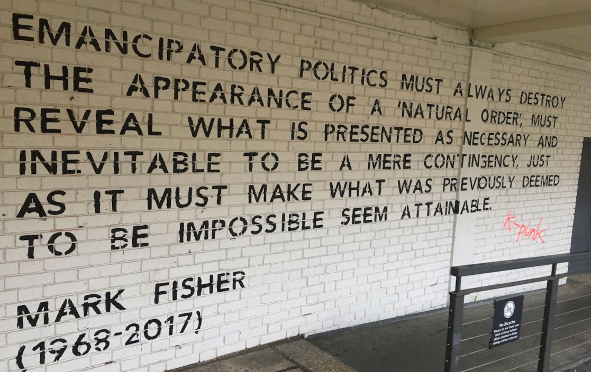

Mark Fisher :: 迷幻共产主义（导论）

解放政治必须总是摧毁“自然秩序”的表象，必须揭发所谓必要、必然实为偶然，同样，它必须让过去被认为不可能的事成为可行。
——马克·费舍尔（1968-2017）
原文可见：my-blackout 作者：Mark Fisher 译者：赵凯 本文转载自怀柔通讯
“可获自由的世界的幽灵”
“匮乏与不成熟一度合理化了对个人的压制，个人从这种压制下获得解放的可能性越是临近，保持并优化这些压制、以防止统治秩序瓦解的要求也就越强。文明为了自我保护，不得不抵御那个有可能获得自由的世界的幽灵。
[…]为了交换商品以丰富自己的生活[…]个人不仅出卖自己的劳动，同时也出卖自己的自由时间。**[…]人们栖身于住宅群中——开着私家车，却再也无法逃往另一个世界。**他们将食物装满巨大的冰箱。家里的报纸杂志一摞摞，宣扬的却只是同一理想。他们忙于数不清的选择和雷同的小玩意儿，无暇顾及真正的问题——他们本可以在做更少工作的同时自行决定自己的需求与满足。”
——赫伯特·马尔库塞，《爱欲与文明》2
这本书的主张是，过去的四十年事关祛除“自由世界的幽灵”。从这样一个世界的视角出发，我们得以反转近期左翼斗争的重点。相较于战胜资本，我们更该注重资本势必出手阻碍的事情：生产、关怀和享受的集体能力。我们左翼对此有过一阵子的误解：并非我们是反资本主义者，而是，资本主义，带着它的防暴警察、催泪瓦斯以及经济中神学式的精密，本就是设计来阻止红色力量出现的。对资本的超越必须基于这样一个简单的领悟，即资本远非关于“财富创造”，相反，它必定总是会阻止共有财富的生产。
在对自由世界之幽灵的祛除过程中，最重要的（尽管不是唯一的）施法者便是这一被称为新自由主义的项目。然而，新自由主义的真正目标却不是它宣称的那些敌人——苏联阵营这一垮塌的巨石和社会民主分崩离析的碎块以及“新政”，它们正在因自身矛盾而崩溃。相反，对新自由主义这一项目的最佳理解是，它的目标是摧毁——致其成为不可能予以考虑的选项——兴起于上世纪六十年代末七十年代初的民主社会主义和开明共产主义实验。
抹除可能性导致的最终结果，是一种我称为资本主义实在论（capitalist realism）的情状，也就是对“资本主义是无可替代的”这一观点的宿命论式默许。如果资本主义实在论有其创始事件，那便是美国支持下皮诺切特将军对阿连德政府的摧毁。彼时的阿连德正在实验一种民主社会主义，这一形式为世界提供了资本主义和斯大林主义以外的选择余地。对阿连德政权的军事摧毁以及随之而来的大规模监禁与酷刑，仅仅是资本主义不择手段使自己看似唯一“可行的”社会组织模式的最暴力最激烈的例证。这不仅仅让一种新型社会主义在智利终结，还将这个国家变成了新自由主义的试验田，那些即将在其他新自由主义中心推出的举措（放宽金融管理、开放外资、私有化）得以在这里首先试用。在美国和英国这样的国家，资本主义实在论的贯彻则是更为零碎的事件，其方式涉及刺激、诱惑与压制。最终的效果是一样的——对民主社会主义和开明共产主义概念的根除。
对“自由世界之幽灵”的驱魔既是一个文化问题，也是一个狭义的政治问题。因为这个幽灵，以及一个超越劳苦的世界的可能性，曾在文化领域中被最有力地提出——甚至是，或者说尤其是，在那些自认不以政治为导向的文化领域中。
情况确实如此，马尔库塞的存在解释了这一点，其作品影响力在近年来的下降便是例证。《单向度的人》（One-Dimensional Man），是其作品中较为悲观的一本，却一直以来都是标准参考系，而《爱欲与文明》则与他的其他作品一样，早已绝版。他对资本主义彻底支配生活和主体性的批判，如今依旧成立；马尔库塞坚信艺术构成了“大拒绝和对现存事物的抗议”3 ，有人宣称这一观点如今看起来只是过时的浪漫主义，在资本主义实在论的年代是不合时宜的古怪论调。马尔库塞对这样的批评早有预料和应对，《单向度的人》的批判之所以具有力量，是因为它来自一个第二空间，这一“美学维度”与资本主义下的日常生活极不相容。马尔库塞论证道，事实上，与浪漫主义相关的“艺术异化的传统形象”并不属于过去。相反，他指出，在构想中，它们“重新唤起并留存在了属于未来的记忆：心满意足的意象，这种满足足以摧毁对其进行压制的社会。” 4
“大拒绝”不仅拒绝了资本主义实在论，严格来说，也拒绝了“实在论”本身。他写道，“艺术和政治现实主义间存在着天然的矛盾”。5 艺术是一种积极的疏离，是对现存事物秩序的“理性否定”。他的法兰克福学派前辈，狄奥多·阿多诺（Theodor Adorno），对实验艺术的内在他异性也曾给予相似的评价。不过，阿多诺的作品意在对资本主义条件下的破损生活进行无休止的检视；关于一个超越资本之世界的构想却被置于乌托邦的高阁之上。艺术在其中仅仅标记了我们与这个乌托邦的距离。相较之下，马尔库塞却在我们眼前唤起了一个彻底转型后的生动世界。其作品的这一特质无疑表明，马尔库塞对60年代反文化运动原理的热情关切。他曾与反文化运动一起，对这个由无意义劳苦工作所主宰的世界发起挑战。在《单向度的人》中，他论证道，文学中最具政治意义的角色，正是“那些不事谋生，最起码不以通常方式谋生的人”。6 这类角色以及他们的生活形式，在反文化运动中走到了前列。
实际上，马尔库塞的作品虽然与反文化运动步调一致，但他的分析也预言了后者的最终失败与收编。《单向度的人》中一个重要的主题是美学挑战的无效化。马尔库塞担忧前卫派的普及，并非出于“文化的民主化会玷污艺术的纯洁性”这一精英式焦虑，而是由于监管下的资本主义商业对艺术的吸收，会掩盖艺术与资本主义文化的势不两立。他此前已见过资本主义文化将流氓、垮掉派以及荡妇从“另一种生活的形象”转化成了“同一种生活下的不同类型或畸形”7。同样的事情也会发生在反文化身上，而在反文化运动中，恰恰有不少人愿意称自己为“畸形”。
不论如何，马尔库塞让我们得以看清60年代为何直至今日依然萦绕。近年来，60年代一旦被提起，首先出现的画面是久远的过去，它如此异域而不可及，我们甚至无法想象自己生活其间，同时，它又比当今时代更为生动——一个人们真正活过，事情真正发生过的时代。然而，那十年的萦绕并非因为众多因素间不可恢复与重复的汇集，而是那个时代所释放并已开始民主化的种种可能性——从劳苦中解放出来的生活愿景——持续遭到压制。要解释我们为何还没有进入一个超越工作的世界，需要着眼于那些旨在生产稀缺性的大型社会、政治、文化工程。资本主义：一个人为创造虚假稀缺以便生产真正稀缺的系统；一个生产真正稀缺以便促成虚假稀缺的系统。真正的稀缺——自然资源的稀缺——如今困扰着资本，成为资本无限扩张的幻想必须加班加点来抑制的实在界（the Real）。而人为创造的稀缺——根本上是时间的稀缺——如马尔库塞所言，为了分散我们对自由之固有可能性的注意，则是必要的。（当然，新自由主义的胜利依靠的是对自由之概念的盗用。新自由主义的自由，显然不是脱离苦役的自由，而是经由苦役的自由。）
正如马尔库塞预言，北方世界已有更多的消费品与消费策略可供购得，而这些商品用来生产时间稀缺的方式则被掩盖。但也许就连马尔库塞也没能料到，21世纪的资本制造过度工作与支配业余时间的能力竟如此强大。或许只有菲利普·狄克（Philip K. Dick）这样犀利的未来学家才能预言今日世界中集团通讯的无所不在是多么陈腐而无谓，日常生活和意识中几乎所有领域都已被其穿透。
“过去要安全得多，”玛格丽特·阿特伍德（Margaret Atwood）的敌托邦讽刺作品《最后死亡的是心脏》（The Heart Goes Last）中，叙述者之一这样说道，“因为其中的一切都已发生。无法再改变：所以，从某方面来说，过去没什么可惧怕的。”8 尽管阿特伍德在书中这样写道，过去却并非“已发生”。过去必须被一再重提，反动叙事的政治出发点是压制旧时光里依旧等待着、时刻准备着被唤醒的潜力。60年代的反文化如今与自身的模仿物已无法分离，将那十年降格为一系列“标志性”形象、“经典”音乐以及怀旧记忆，完全抹灭了其间爆发出的真正期许。反文化中这些易于被挪用的层面被重新打造成了“资本主义新精神”的先锋，而那些与过度劳动相抵触的层面则被指责为无用的玩闹，它们在反动派的矛盾逻辑中，既是危险的，也是无用的。
马尔库塞所倡导的姿态的遭受了怀疑与敌意，而对反文化的征服，貌似证实了这些怀疑与敌意的正当性。如果说真是“反文化导致了新自由主义”，那么反文化运动不如不发生。但实际上，相反的论调才更有说服力——60年代之后左翼对反文化梦想的否认和拒绝，才更大地导致了其失败。新右翼的掌权并无必然性，将这些新思潮与右翼强制式的个人化和过度劳作的项目的捆绑也没有必然性。
如果反文化运动只是蹒跚的开始，而非可期待的巅峰的话，情况又会是怎样呢？如果新自由主义的成功并不意味着资本主义的必然性，而只是证明了自由社会的威胁之大呢？
基于这样的精神，本书将回到上世纪60和70年代。没有反动势力对那个年代的谬述，资本主义实在论也无以崛起。回到那个年代，让我们得以继续择除围绕其周的新自由主义叙事。更重要的是，这让新叙事的构造成为了可能。
从很多方面来讲，对1970年代的重新思考比对1960年代的重提要更为重要。1970年代是新自由主义兴起的十年，这一兴起如今被追述为不可抵抗的。然而，近年来关于1970年代的作品——包括杰弗逊·考伊（Jefferson Cowie）的《活下来：工人阶级的最后光景》（Stayin’ Alive: The Last Days of the Working Class），安迪·贝克特（Andy Beckett）的《当灯光熄灭》（When the Lights Went Out）和约翰·梅德赫斯特（John Medhurst）的《消失的选项》（That Option No Longer Exists）——都着重强调了，那十年不仅仅是关于抹除六十年代爆发之可能性的。七十年代也是斗争和过渡的时期，在这个时期，前十年的意义与遗产是决定性的战场之一。六十年代出现的一些解放倾向在七十年代得到了增强和发展。“对很多关心政治的英国人来说，”安迪·贝克特这样写道，“七十年代并不是六十年代的宿醉；而是趴体真正开始的时刻”。9
1972年的矿工大罢工见证了罢工矿工与学生之间的联盟，正像1968年巴黎的联合一样，矿工们利用埃塞克斯科尔切斯特大学的校园作为他们的在东盎格鲁的基地。
这些七十年代的新解读远远超越了“六十年代引发了新自由主义”的简单叙述，让我们得以看穿新自由主义反革命那油滑的技艺、凶残的能量以及即兴的想象力。资本主义实在论的树立绝不只是旧形势的简单重建：新自由主义强制施加的个人主义是一种新型的个人主义，是一种针对六十年代强烈呼吁的各种集体性而定义的个人主义。这种形式的个人主义被设计来超越并让我们遗忘那些集体形式。所以，与其说回顾这些形式多样的集体性是一种铭记，不如说它是一种反遗忘，对一个自由世界的幽灵的反驱魔。
迷幻共产主义正是我给这个幽灵取的名字。迷幻共产主义的概念既是一种挑衅，又是一种承诺。它可以说是某种玩笑话，但有着严肃的目的。它直指在某一时刻看起来势在必得，而如今貌似毫无可能的事：阶级意识的汇聚、社会主义-女性主义意识的兴起、迷幻意识、共产主义项目与新社会运动的融合、对日常生活前所未有的美学化。
迷幻共产主义既指实际的历史发展，也指设想中尚未发生的汇集。潜在性不需实现便能产生实际影响。实际中的社会构成正是由潜在的社会构成所塑造，而实际中的社会构成往往力图阻碍潜在社会构成的实现。“自由世界”的印记恰恰能在这个让自由成为不可能的资本主义实在论世界的结构中发现。
已故文化批评家艾琳·威利斯（Ellen Willis）曾说过反文化所想象的那种变革，需要“社会及灵魂层面几乎不可想象的重大革命”。10重造反文化的自信，相信这样一场“社会和心灵的革命”不仅可以发生，而且已经在眼前展现，在我们这个更受挫败的时代是一件非常困难的事情。但我们需要回到一个全球解放看起来势在必得的时代。
再也不要痛苦的周一早晨
让我们从一个更能唤起回忆的时刻开始，这一时刻有着显而易见的朴实：
那是1966年的7月，我刚刚9岁。我们一家人在布罗兹湿地度假，我们刚刚搞到一艘木质游艇，它将是接下来两周我们在水面上的家。这艘游艇名为“星座”，我和弟弟的房间位于船首，我们屏息欣赏着房间里的两张单人床和挂着窗帘的舷窗，未来的景象让我们的生命力像卡通太阳那样从身上散射出来。我穿过游艇，来到船尾，途中我拿上了姐姐莎伦的少女粉三洋半导体收音机。我抬头看着午后的湛蓝天空。Ike and Tina Turner的“River Deep, Mountain High”从收音机里传来，一阵狂喜的恍惚贯穿了我。我的目光从无限的蓝天转向游艇身后旋转着的晶莹尾迹，那一刻，“River Deep, Mountain High”结束，我当时最爱的歌曲，Hollies的“Bus Stop”响起。一阵仿弗拉门戈吉他在“星座”发动机的隆隆声中响起，我看着翻滚的水面，大声对自己说，“这一刻正在发生。这一刻正在发生。”11
这段描写来自《漏进大海中》（Going To Sea in a Sieve），作家兼主持人丹尼·贝克（Danny Baker）的回忆录。不必说，这段快照式的描写并无太多深意，单纯一副阳光灿烂的景象，来自那个承受了太多痛苦与恐怖的时期。六十年代并非已经实现的乌托邦，正如对多数无产阶级者来说，当时贝克面前的机遇并不存在。相似地，贝克对逝去童年时光的怀旧幻想很容易被轻视，而那种闪着金黄色的记忆，任何一个经历了相同历史时期或社会背景的人都会拥有。
然而，他笔下的那一时刻却有着一种特殊的东西，那种东西意味着它只可能在那时出现。我们可以列举使其独一无二的种种因素：一种允许工薪家庭拥有假期的存在感和社会保障；半导体收音机等新技术使各团体与外界相连并使他们可以尽情享受当下，这种当下离谱地充实；真正的新音乐——一种仅仅在几个月前还不可想象的音乐——明确并加强了整个场景，将随意感而不是盲目的乐观灌注其中，那是一种世界已有所改善的感觉。
这种离谱的充实在Kinks的“Sunny Afternoon”中同样可以听到，或许这首歌贝克在同一天的同一个收音机中也听到了，而在一个月后Beatles发行的“I’m Only Sleeping”、再后来Small Faces的“Lazy Sunday”中通通可以找到这种感觉。这些歌都看穿了焦虑之梦般的日常劳苦，它们顺流飘荡却最终超越其上：晚睡者的床变成了让人发懒的小船，他从高窗瞥到繁忙的街道；在永不需结束的周日午后公开弃绝周一早晨的雾霭；贵族们曾经扎堆闲聊的高阁中，投出了对繁忙生计的轻率鄙视，而那里，如今也成为了那些再也不用打卡的无产阶级梦想者的领地。
“Tomorrow Never Knows”是Beatles专辑《Revolver》中最具自觉意识的迷幻曲目，“I’m Only Sleeping”（“stay in bed, float upstream”：躺在床上，漂向上游）则是它的孪生曲。《Tomorrow Never Knows》的歌词简单改编了《迷幻体验：一部基于西藏度亡经的使用手册》（The Psychedelic Experience: A Manual Based on the Tibetan Book of the Dead）的内容，看起来多少有些油滑，但其音乐、声音设计却保持了让人身临其境的力量。“那跟我们听过的任何东西都不一样，”约翰·福克斯（John Foxx）这样回忆《Tomorrow Never Knows》，
但听起来又是那么熟悉。当然，歌词有点不靠谱，但音乐和声音——有机的电流、衰弱的信号、遗失的广播站、平行宇宙里的天主教/佛教弥撒，上劲儿时应该有的样子——失重、永恒、启示，以平静的速率飞过发光的崭新境地。传递、创想、渗透、吸引、提升——它简直就是通往未来的地图。12
这些“发光的崭新境地”便是超越工作的世界，在那里，枯燥重复的日常苦役让位于对陌生地带的漂流式探索。现在听来，这些歌描绘的正是生产它们时必要的条件，也就是某种特定的时间模式，在这种时间模式中，深度的专注成为可能。
拒绝工作也是在拒绝内化那种声称人的存在由付薪职业所确认的价值体系。也就是说，它拒绝向资产阶级的凝视屈服，因为这种凝视完全依据商业成功来衡量人生。“我的成长背景中，人们是没有‘事业’的”，丹尼·贝克写道。“你只是上班，在不同时期从事不同工作，但它们全掺杂在一起。它并不定义你或绘制你的生活轨迹——我对此感到无比庆幸。”贝克在东南伦敦毕业时没有取得任何学历。从唱片店助手到歌迷志制作者、音乐记者以及电视广播主持人，他小心翼翼地避免自己流浪般的人生旅程被看做是不幸遭遇或奋斗故事。他不用小资产阶级的“奋进”式叙事讲述自己的经历，仅仅将其视为鲁莽带来的意外收获。这种“鲁莽”源于“工作不能带来个人实现”的认知，而强大的自信让他得以持续抵御中产阶级的窘迫与焦虑。贝克的两卷回忆录清晰列出了允许这种自信成长的各种因素：父亲工作相对稳定，繁荣的码头似乎能够永远立于英国经济的中心；一家人深植福利优厚的工人阶级网络；家里购置的全新带花园经适房。他从事写作和主播并非受事业进取心驱动，而是因为新出现的公共领域中——由部分电视、广播和纸媒构成——工人阶级的愿景得到了肯定和尊重。而厨房水槽现实主义或是社会主义现实主义提供的套路与统治阶级的讽刺描绘一样，对理解这一工人阶级没有任何帮助。它是一种不再依“身份”行事的工人阶级，一种超越了自身的工人阶级。即便是资产阶级的旧藏身所也不再安全了。在六十年代，泰德·休斯（Ted Hughes）成为英国最具影响力的诗人之一，哈罗德·品特（Harold Pinter）则是最令人激动的新剧作家之一，两人的作品都以富有挑战性的难懂方式反映了工人阶级的体验，并通过电视将其引入了广大观众的客厅。
无论如何，我们离后来新自由主义理论家所鼓吹的阶级消失还有很远。在当年的美国和英国，劳工与资本间达成协议，接受了阶级作为社会组织的永恒存在。这些协议假定存在需要和解的各阶级利益，而任何有效的（且不说公正的）社会管理都必须将有组织的无产阶级纳入其中。工会发展壮大，低失业率使他们勇于提出要求。无产阶级的期望值很高——他们争取到一些利益，更多利益也定会到来。当时很容易想象劳工与资本间剑拔弩张的休战终会结束，但与之同时发生的不是右派的死灰复燃，而是对更多社会主义式政策的接纳——即便不是尼基塔·赫鲁晓夫以为会在1980年达成的“全面共产主义”。毕竟——起码看起来——右派转攻为守，不再被信任，在美国甚至可以说由于越战的失败遭到重创。“建制”不再要求自动服从；相反，它开始露出疲态、失联且过时，无力地等待着下一波腐蚀一切旧的确定性的新文化政治浪潮将其卷走。
驱动新文化的并非来自无产阶级背景的人们，而是Pink Floyd这样的阶级叛徒——那些拒绝自己的阶级命运并“向下”或向外认同的中产阶级子弟。他们绝不想进入商业和银行业：正是这些领域后来的力比多化（libidinisation）阻碍了六十年代的心智拓展。
工人阶级的抱负并不等同于阶级跃升，因为其中的回报十分可疑——逐渐而勉强地被“优等人”接纳。相反，新波西米亚似乎直指中产阶级及其价值的灭除。确实，当时的人们确信这即将发生，它也是反文化与传统革命左翼交集的少数区域之一，而在其他诸多方面，两者看起来颇有不同。
艾琳·威利斯无疑感到左派政治的主导形式与音乐所激发和表现的欲望、雄心不相匹配。她听的音乐畅言自由，社会主义却似乎强调中央集权与国家控制。威利斯认为，反文化的政见虽然可能与资本主义相敌对，但并不意味着它应该断然排斥资本主义领域所生产的一切。她对“标准左派关于先进资本主义的看法的驳斥”拒绝了那些顶多只说对一半的理念（“消费经济让我们成为商品的奴隶，大众传媒的功能便是操控我们的幻想，于是我们将自我实现等价于购买体制所提供的产品”。13）大众文化——尤其是音乐文化——相较于资本统治的领域，更像是斗争发生的场地。其中美学形式和政治的关系处于不稳定的初级阶段——美学形式并不简单“表达”某些已经存在的资本主义现实，它们也期盼和实际生产着新的可能性。对抗总是会不可避免地以对资本有利的方式解除，但商品化并非这一过程中的关键；相反，商品本身就可以成为反叛潮流扩散的途径：
大众传媒帮助传播反叛，体制友好地营销着鼓励反叛的产品，原因很简单：反叛者也是消费者，他们身上有钱可赚。在某个层面上，六十年代的反抗正是对列宁名言（“资本家会卖给你吊死他的绳子”）的生动描绘。14
在英国，斯图尔特·霍尔（Stuart Hall）对当时的很多左翼感到了类似的沮丧——这些沮丧在他身上更为强烈，因为他自认社会主义者。不过霍尔想要的社会主义——一种能够包容他在Miles Davis音乐中听到的渴望与梦想的社会主义——还未能出现，它的到来同时遭受着来自左右两派的阻挠。
首先一个碍事的左派形象便是组织了劳工或社会民主的得意的冷战执事者：保守、官僚、屈服于资本主义的“必然性”、对维持白人收入与地位更感兴趣而非扩大斗争，这一形象由妥协和最终的失败所定义。另一个形象——我想称其为“严酷列宁主义超我”（The Harsh Leninist Superego）——则由其对妥协的全然抗拒所定义。
根据弗洛伊德的理论，超我是由其在质与量上过度要求的本质所决定的：不论怎么做都不够。列宁主义超我要求军事化的自律。这些好斗者会一心投身革命事件，并毫不妥协地忠诚于能够带来革命的一切必要手段。列宁主义超我对痛苦的冷漠和对享乐的敌意俱甚，列宁本人对于音乐的恐惧反应在此具有重要指导作用：“我无法太过频繁地聆听音乐。它会影响你的神经，让你想要说些好听的蠢话，轻抚那些活在这邪恶地狱，却能创造出此等靡靡之美的人的脑袋。”
劳工组织得意的领导者们满足于现状，严格列宁主义超我则将一切作为赌注押在一个全然相异的世界。只有在这个后革命的世界才能兑现列宁主义者的诉求；他们会从这个世界的视角出发评判自己。同时，培养对当下苦难的冷漠正当且确有必要：我们可以且必须跨过无家可归的人，因为慈善只能阻碍革命的到来。
但这种革命与艾琳·威利斯认为的已在反文化梦想中生根的“几乎难以想象的社会与心灵的重大革命”鲜有相通之处。她构想的革命更为紧迫——本质上关注的是福利与国内政策的组织方式——与深远：转型后的世界会比马克思列宁主义者所规划的一切形态都更为陌生。反文化则认为自己已经在生产可以体验这种革命的空间。
想要领略这样的空间，我们最好去听听The Tempations在1969年12月发行的歌曲“Psychedelic Shack”。这个乐队扮演着从某个仙境刚刚返回的天真少女：“灯光闪烁直至日落……时间消失……香气弥漫空中……”（Strobe lights flashin’ way till after sundown… There ain’t no such thing as time… Incense in the air…）
熟悉这类能指之后，如今再听“Psychedelic Shack”会让我们不禁呆住。迷幻思维中，我们最初的联想可能会带着唯我的孤僻（“Tomorrow Never Knows”那样的歌词唤起的正是这样的联想）。然而“Psychedelic Shack”描绘的却是标准的集体性空间，其中喧嚣的是集市般的能量。那种对日常现实的逃脱犹如狂欢，却并非遥不可及的乌托邦。它感觉上更像一个可能存在于现实中的社会空间，你完全可以想象它的存在。这里的怪人或小贩很可能也是诗人或音乐家，而谁又知道今天的怪人会不会成为明日的天才？这也是一个平等与民主的空间，某种特别的感动在这里主导着一切。它充满多样性，鲜见怨恨和恶意的迹象。它为人们提供相识、会面、谈话，甚至是颠覆思想的空间。如果“时间不复存在”——因为光的停留消除了日夜的区分，药物影响了对时间的感知——那么你便不会再受日常工作匆忙的折磨。一段对话的持续时间再没有限制，一次相遇也不知会引向何方。你可以随时将自己的街头身份抛下，你可以随心变化，跟随那些你都不知道自己拥有的欲望。
迷幻的决定性特征是意识问题以及它与被体验为现实之物的关系。如果说我们的体验的根本，比如我们对时间和空间的感知，可以被改变，那么这难道不意味着我们生活所依的类别也是可塑和可变的？从个人角度来理解，这立马会引向轻率的相对论与幼稚的唯意志论，也就是Temptations在他们的首支迷幻单曲“Cloud Nine”中所瞄准的东西。你当然可以成为任何你想成为的东西，但只有在距离现实十万八千里的地方，只有在将所有责任抛下时，才有可能。这一超我式诉求是可以被保守派以及某种激进派所支持的：保守派想要每个人都屈从于工作；激进的好斗者则要求对革命的奉献，而这——据他们所说——引出的是对世界之恐怖的注意，而非从现实的迅速逃离。
不过意识状态的改变能将你带至“离现实十万八千里的境地”的主张也是成问题的。它排除了一种可能，即意识状态的改变也可能造成对权力、剥削以及仪式系统更清醒而非更模糊的感知。在六十年代，当意识越发被广告和资本奇观所创造的幻象和形象所围困时，迷幻所逃离的“现实”又能有多稳固？相较于警觉与觉醒，意识状态难道不是更像梦游症一样易受景观之感染？
现在看来，六十年代的迷幻文化最不寻常的一个特点便是对此类形而上问题的主流化。迷幻并不新鲜——很多前资本主义社会早就通过对致幻物质的使用将迷幻想象纳入其中。新鲜的是从特定仪式化的空间、时间，从特定执事者如萨满、术士中脱离的迷幻。当时的意识实验原则上向所有人开放。这一特点确实具有祛魅与唯物的一面，尽管神秘主义和伪通灵向来笼罩着迷幻文化。意识实验的普及起码承诺了神经学的民主化——对大脑在产生现实体验时所扮演的角色，如今有了新普及的认知。那些使用迷幻药的人正在外化自己大脑的运作，并可能正在学习以不同方式使用自己的大脑。
不过，迷幻体验并不仅限于那些服药的人。将迷幻概念与越战一道带入主流的大众媒体自身也是一场改变意识的大型实验。通过电视，电影所开启的对于梦境与清醒间区别的分解，如今也开始进入“私人”家庭空间。电视居于正在聚合的媒体地貌中心，当时的人们无法理解，因为这是史无前例的事件。Beatles在约翰·肯尼迪遇刺前几个月发行了他们的第一张专辑。电视成为了传染（披头狂热！）、创伤和歇斯底里的渠道，也是家长式信息和商业推销的途径。Beatles之前从未有人具有这样的名气，因为这般名气所必须的基础设施刚刚开始被创造，而Beatles自身也在参与这一建设，就好像——在同一时间——世界变成了他们电子梦境的延伸，他们成为了所有其他人梦中的角色。
你也许会说Beatles的迷幻转型是在尝试将这一切都转化为一个清醒梦。这就是《Sgt Pepper》中“A Day in the Life”所具有的质感，它彰显了列侬清醒梦般的平静与工作生活的紧迫（麦卡特尼气喘吁吁争分夺秒追赶公交车的通勤体验）间的差异。不过从匆忙中的逃离却总是更为紧迫的——一旦上了公交，麦卡特尼的角色便坠入了梦境。列侬在歌中听起来是冷静而不疏离的；幽默却没有直男式的随便。他的人声似乎在说，日常世界的普通梦游症只有通过一种别样的出神状态所提供之视角，才能被正确理解。抑或，更确切地讲，那是一种从神经症般工作/清醒生活的紧迫性中断裂出来的声音？这些歌向我们展现了从外部看到的内部，正如列侬通过不同路径将我们带上的旅程，在其中，意识被电子化影响（被报纸、电影、电视）：“我读了今天的新闻，乖乖啊”。（I read the news today, oh boy）
乔纳森·米勒（Jonathan Miller）改编的电视版《爱丽丝梦游仙境》中到处都是紧迫与清醒的对比。这部电视片1966年12月在BBC开播，它对Beatles影响的吸收甚至反过来在后来影响了Beatles。黑白拍摄的影片没有任何特效或是华丽意象，采用了一种奇异地清醒、甚至可以称为朴实的视觉风格。这也与片子最有力的创新点一致——将角色表现为人类而不是动物。“只要把那些动物头套拿下来，”米勒在接受《生活》（Life）采访时说，“你就能够看到它所讲的东西。一个小孩子，被匆忙、焦虑的成年人团团围住，她在想：‘长大就是这样吗？’”
影片中弥漫着倦怠、懒散与紧张症的氛围，有时也会急转直向恐慌与无助。米勒说：“这本书通过给人穿上动物的衣服，呈现了一个伪装的——一个由梦境伪装的——家庭猜谜游戏，[…]各种层级的权力、施令与服从都在其中有所反映。”15 平常世界以无意义的碎片形式出现，它令人费解地不一致，专横独裁，由怪诞的仪式、重复和无意识主导。它本身就是一场噩梦，一种恍惚。成人们折磨并迷惑着爱丽丝，在他们严肃而自闭的暴躁中，我们看到了意识形态本身的疯狂：一场忘记自己是梦的梦境，用它的紧迫将我们卷走，用它阴郁的痴呆将我们迷惑，或是用它突然而不可预测且贪得无厌的暴力，试图让我们也去忘记。
这个爱丽丝所引发的笑——有时尴尬不安，有时则令人捧腹——是一种来自外部的笑声。那是一种迷幻的笑声。这种笑声远远不能确认或验证任何现状的价值，反而暴露了所谓常识的荒诞与矛盾。这不就是福柯在《事物的秩序》（The Order of Things）前言中所描述的笑声吗？这本书的首版与米勒版《爱丽丝》同年发行。在此书著名的序言篇中，福柯提到了博尔赫斯所写的一个故事，故事引用了某部“中国百科全书”，写道：
动物分为：（a）属于皇帝的、（b）涂香料的、（c）驯养的、（d）哺乳的、（e）半人半鱼的、（f）远古的动物、（g）放养的狗、（h）归入此类的、（i）骚动如疯子的、（j）不可胜数的、（k）用驼毛细笔描绘的、（l）等等、（m）破罐而出的、（n）远看如苍蝇的。”在对这一分类法的惊诧中，我们得到了顿悟：那个通过神话展现为异国魅力的另一套思想体系，其实是我们思想的局限，是如此思想的全然不可能性。16
这一观点，这一来自外部的笑声，贯穿福柯的所有作品。就其错综复杂、稠密与难懂来讲，福柯的主要作品，从60年代初的《疯癫的历史》到加州死亡谷时期后出版的关于性学的作品，似乎都在围绕与重复着一种基本的内察力（insight）或外察力（outsight）……任何一种系统的随意与偶发性，其可塑性。
如果说这种外部视野与迷幻意识是相一致的，那么在福柯的案例中，并没有显出来自药物的根源。福柯本人直到十年后才愿意服用LSD，那时他前往死亡谷，在扎布里斯基角服用了LSD，也就是米开朗基罗·安东尼奥尼那部关于反文化的电影的拍摄地。
向来很少能够坦然接纳自己的福柯，也在寻找突破身份的出路。他曾著名地宣称他写作“是为了不拥有一张脸”，他在野路子学术与概念发明中的大量操练，他一丝不苟从各类史料哲籍中搜集来的文本上的错综，都是他逃出这张脸的途径。另一种途径则被他称为极限体验（limit-experience），其中一个版本就是他与LSD的相遇。极限体验是悖论式的：这种体验处于却又超越“普通”体验的限制，是一种不可能以普通方式体验的体验。极限体验提供了一种形而上的捷径。让普通体验得以成为可能的状况，如今也可以被找到、变形以及逃脱——最起码暂时可以。不过，从定义上来看，经历这一过程的实体不能是通常的体验主体——它应该是某种匿名者X，一个无面的存在。
反文化中大量音乐从外部为这种实体提供了声音，而福柯向极限体验的转向也与当时流行起来的意识实验同步。“关键的问题，”福柯在《谈论马克思》中的一篇采访里说道，
并不是恢复我们“丧失”的身份，释放我们被囚禁的天性、我们最深的真相；**相反，问题在于向某种激进的他者（Other）移动。那么其中心似乎依旧能在他关于马克思的言论中找到：人生产人。[…]对我来说，我们必须生产的不是与自身同一的人，像自然依据他的本质为他设计的那样；相反，我们必须生产某种尚未存在的东西，这种东西会是什么我们无法得知。17
在一个关于福柯文本的注解中，迈克尔·哈特（Michael Hardt）论证说“共产主义的积极内容，与消灭私有制相一致，是人性的自治生产——一种新的观看、新的聆听、新的思考、新的爱。”18
新的人性、新的观看、新的聆听、新的思考、新的爱：这就是迷幻共产主义的承诺，这也是你在“Psychedelic Shack”及其诞生的文化中可以听到的承诺。“Psychedelic Shack”距离Tempations的早期金曲“My Girl”仅仅五年，但就在这么短的时间中，多少新世界得以涌现？在“My Girl”中，爱还仅限于伴侣之间，而在“Psychedelic Shack”中，爱是共有的，并向外蔓延。
Temptations的非正式队长奥蒂斯·威廉姆斯（Otis Williams）说服制作人诺曼·惠特菲尔德（Norman Whitfield）为乐队打造新曲风，一年后乐队发行“Psychedelic Shack”。惠特菲尔德一开始并不情愿，但他态度的最终转变却带来了流行音乐史上最令人惊艳的制作之一：这种制作基于一种由“Tomorrow Never Knows”唤起、Beatles却从未善加利用的期许。惠特菲尔德后来愈发迷恋自己所制作的迷幻之声，甚至常常说服乐队发行长达八九分钟的歌曲，为加长的乐器过渡段留足了空间。后来他专门组建了Undisputed Truth乐队作为这些加长版迷幻制作的实验项目。惠特菲尔德将录音棚作为创作工具的实验与Lee “Scratch” Perry在牙买加以dub所事之业如出一辙。他们共同开启的声音空间都基于一种特定的时间体验：一种膨胀的时间，一种即刻裸露、充满了奇异听觉形式的时间，就在它们将听者拥入节奏型和律动中时，也诱使着我们深深沉浸在当下。后来，Tom Moulton、Larry Levan以及Walter Gibbons等人将这种新的时空感重新发掘修整，创造了加长舞曲，构成了house、techno、jungle等迷幻曲风的基础。
Temptations新曲风的模板来自Sly and the Family Stone，James Brown和Jimi Hendrix的痕迹也在其中：一个发热的矩阵，其组成元素早已开始互动。曲风的变化不止于风格；它还回应了对于新音乐的要求和期望。再也不用仅限于口水情歌或是助兴劲曲，流行音乐如今也可以作为社会评论；不仅如此，它还能从瓦解旧有确定性、偏见、成见的社会变革中吸取营养并进行反哺。它可以通过民权运动中所释放出来的自信、愤怒与坚定来确定自己的方位，并呈现一套新的社会关系，让我们一瞥运动一旦成功，世界可能会有的模样。这也是格雷尔·马科斯（Greil Marcus）在Sly and the Family Stone中所看出的东西，在文章《猛汉老李之谜》（The Myth of Staggerlee）中他写道：
Sly真正的成功在于他的两全其美。他风格中的每一处细节，从服装的花哨到音乐的原创性，都明确表示他是完全属于自己的人。**如果他音乐的本质是自由，那么没有人比他自由得更激进。而由黑人白人、男人女人组成的乐队就如美国的缩影，每个人都有自己的空间，他们高唱着“各行其是”(different strokes for different folks)，在舞台上展现着这样一种自主思想到底意味着什么。19
Sly and the Family Stone看起来确实尽善尽美：他们拥有一种似乎要以某种方式瓦解的即兴之声，但又蜿蜒曲折适于起舞；这种音乐既不多愁善感，又不道貌岸然，而是幽默却极其严肃的。
《爱丽丝》的笑声、顽皮的自由和大胆体现在了Sly and the Family Stone的音乐中：也许这些特质确实首先由先行者履行，但将其局限于精英中则毫无必要。相反，他们在电台和电视上坚持提出的问题是：这种波西米亚为何不该向所有人开放？
尽管传统左派对这些思潮不是充耳不闻就是满满敌意，反文化运动却实实在在为工厂以及新型工人的斗争带来了巨大影响。“那是一代不同的工人”，J.D. 史密斯（J.D. Smith），俄亥俄洛兹敦一家雪佛兰车间的工会财务，这样说道。“这些人并不出身于旧的社会，他们不会满足于随便一份工作。他们没有经历过经济萧条。他们暴露于——最起码通过电视——所有过去十年中发生的青年运动，他们不觉得待业有什么不光彩。”20
1972年，洛兹敦的这间工厂发生了争取更佳工作条件的斗争，反映了对于苦役和威权新的不容忍。“洛兹敦的工人们”，杰弗逊·考伊写道，
成为了新型工人的集体性国家标志和广布的职业异化感的象征。人们开始受到年轻人新鲜的视野、活力以及跨种族团结的吸引，这些特质曾隐藏在电视剧角色阿奇·班科尔（Archie Bunker）、亲战劳工领导权以及蓝领对抗的政治增长之后，不为公众所知。21
洛兹敦是行动主义浪潮的一部分，在其中这一“新型工人”为工会的民主和工作场所的控制斗争。在这样的斗争中，“Psychedelic Shack”中所投射出的平等社会空间不能被贬低为被动的白日发梦，或转移现实政治注意力的行为。相反这样的音乐恰恰升起于真实社会文化构成中的积极梦想，且反哺潜在的新集体与新的存在性氛围，这种氛围既拒绝了辛苦的工作又拒绝了传统的怨恨。“年轻的黑白工人相互认同”，洛兹敦分会主席加里·布来纳（Gary Bryner）说，“他们达成了共识，不管是留着蓬蓬头的，留着小卷辫的、山羊胡的，他们不在乎他是黑人白人绿人还是黄人。”这种新型的工人——他们“抽叶子、跨种族社交，并且梦想着一个工作可以充满意义的世界。”22 ——想要得到对工会以及工作场所的民主控制。
同样的事件也在意大利发酵，那里的新型工人也在逐渐变得明朗起来。“这些新一代的工人与老的工人党传统没什么关系，”1973年弗兰科·博拉蒂（Franco Berardi）对都灵的事件这样评价。“他们跟国家所有制的社会主义意识形态也没关系。在他们的抗议背后，主导因素是对工作带来的悲哀的大规模拒绝。这些年轻的工人与嬉皮运动的关系要更大；与前卫派传统的关系更大。”23
到了1977年，一个全新的社会混合体，一场“群体性的前卫运动”，在博洛尼亚蓄势待发。就是在那里，也许要比其他地方更甚，迷幻共产主义终于聚合成了一种切实的形式。新的思想与新的美学形式融合之时，这座翻腾着能量与自信的城市爆发了。
大学里充满了南方人、德国人、喜剧演员、音乐人甚至是安德烈·帕齐恩扎（Andrea Pazienza）和菲利波·斯库扎里（Filippo Scozzari）这样的漫画家。艺术家们占领了城市中心的房子，开始运营诸如爱丽丝电台（Radio Alice）和梦工厂（Traumfabrik）这样的创意空间。一些人开始阅读《反俄狄浦斯》（Anti-Oedipus）这样的书籍，也有人开始背诵马雅可夫斯基（Majakovski）和阿尔托（Artaud）的诗歌，他们听着Keith Jarrett和The Ramones这样的音乐，吸入着那些能够引发梦境的物质。24
到了2月，博拉蒂与其他年轻激进分子创办的杂志《A/traverso》发表了名为《革命正义、可行且必要：看啊同志们，革命在望》的一期：
我们想要没收天主教堂的所有资产
削减工作时间，增加就业岗位
增加薪水
生产转型，置其于工人控制之下
解放大量被资本主义浪费的才智：迄今为止科技仅仅被作为控制欲剥削的手段，而它希望变成解放工具。
控制论和情报学的应用让工作减负成为可能
零工作获得收入
一切生产自动化
所有权力归活劳动所有
所有工作交给死劳动
1977年，这样的要求看起来不仅现实而且必然发生——“看啊同志们，革命在望”。当然，如今我们知道，革命并未发生。但在21世纪，这样的一场革命所需要的物质条件要远远好于1977年。那之后彻底变得面目全非的是存在性的和情绪性的氛围。人们被告知自动化将取代他们的工作，却还是屈从于工作的悲哀。我们必须重新找回七十年代那个时刻的乐观精神，同时我们必须仔细分析资本所采用的所有将自信变为沮丧的机制。了解这一削弱意志的过程如何运行，是翻转它的第一步。
- 1.这是一部计划中新书的导论部分，写于2016年，先前未发表。此导论是这部计划作品仅存的部分。 ↩
- 2.Herbert Marcuse, Eros and Civilisation , (Routledge, 1987), p. 93 ↩
- 3.Herbert Marcuse, One-Dimensional Man , (Routledge, 2002), p. 66 ↩
- 4.同上, p. 63 ↩
- 5.Herbert Marcuse, The Aesthetic Dimension (Beacon Press, 1979), p. 36 ↩
- 6.Marcuse, One Dimensional Man , p. 62 ↩
- 7.同上 ↩
- 8.Margaret Atwood, The Heart Goes Last , (Virago, 2016), p. 189 ↩
- 9.Andy Beckett, When the Lights Went Out: Britain in the Seventies , (Faber and Faber, 2010), p. 209 ↩
- 10.Ellen Willis, Beginning To See The Light: Sex, Hope and Rock-and-Roll , (Wesleyan University Press, 1992), p. 158 ↩
- 11.Danny Baker, Going to Sea in a Sieve , (Phoenix, 2012), pp. 49-50 ↩
- 12.John Foxx, “The Golden Section: John Foxx’s Favourite Albums”, Quietus , (3 October 2013), http://thequietus.com/articles/13499-john-foxx-favourite-albums?page=5 ↩
- 13.Willis , Beginning To See The Light , p. xvi ↩
- 14.同上 ↩
- 15.Jonathan Miller, cited in Life , (25 November 1968), p. 100 ↩
- 16.Michel Foucault, The Order of Things , (Routledge, 2001), p. xvi ↩
- 17.Michel Foucault, Remarks On Marx , (Semiotext(e), 1991), p. 121 ↩
- 18.Michael Hardt, “The Common in Communism”, in Costas Douzinas and Slavoj Žižek (eds), The Idea of Communism , (Verso, 2010), p. 141 ↩
- 19.Greil Marcus, “The Myth of Staggerlee”, in Mystery Train: Images of America in Rock ‘n’ Roll Music , (Penguin, 1997), p. 82 ↩
- 20.Jefferson R. Cowie, Stayin’ Alive: The 1970s and the Last Days of the Working Class , (The New Press, 2012), p. 46 ↩
- 21.同上, p. 48 ↩
- 22.同上 ↩
- 23.Franco Berardi, After the Future , (AK Press, 2011), p. 48 ↩
- 24.同上, p. 23 ↩